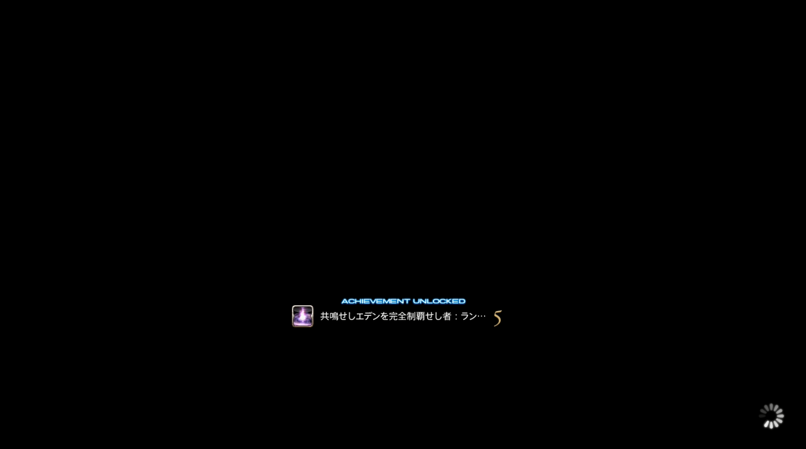

是的，我过本了。
共鸣零式4层。
也没太多感想吧，就是觉得很累。毕竟……也打了一个月。
我想我并不能很好地区分游戏与现实，开荒这个可能也对我的现实生活造成了不小的影响。
至少我的心态打得非常爆炸。
可能下一次零式我会像阿尔法那样再次放弃……或者觉醒篇那样等5.1装备缓和了再开始开荒。
我不知道我要不要再加固定队开荒，可能不会了。
但……最终能过就好。虽然心态很爆炸，但是能过还是很开心的。
谢谢固定队的队友们。ありがとうございます。
Kei Goemon@Zeromus（绝枪战士/ガンブレーカー）
Haru Garnet@Alexander（骑士/ナイト）
Aisa Goemon@Zeromus（白魔法师/白魔道士）
Scat Hignard@Bahamut（学者）
Marco Coco@Zeromus（龙骑士/竜騎士）
Olivier Poplin@Fenrir（吟游诗人/吟遊詩人）
Valkyrie Clair@Alexander（召唤师/召喚士）